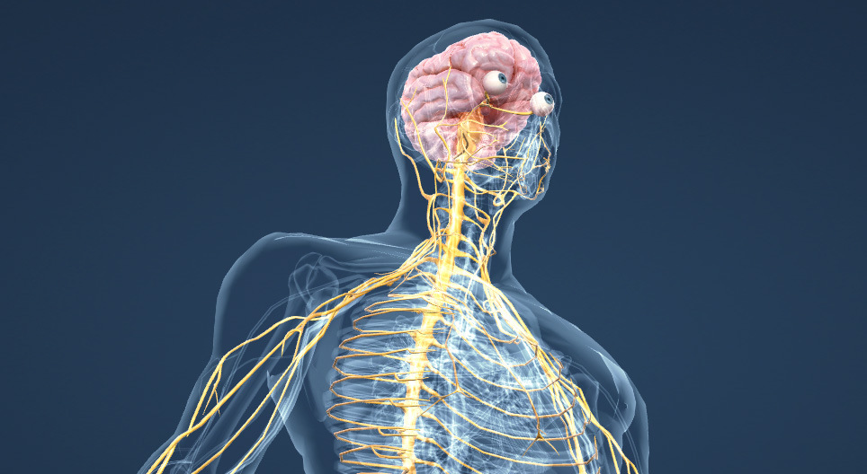

SISTEMA NERVOSO
Per sistema nervoso si intende un'unità morfo-funzionale e strutturale caratterizzata da un tessuto biologico altamente specializzato nel ricevere, trasmettere, controllare ed elaborare gli stimoli interni ed esterni del corpo, per mezzo di segnali bioelettrici nei metazoi, permettendo in definitiva a un organismo vivente di relazionarsi con il proprio ambiente; il sistema nervoso è alla base delle funzioni muscolari, sensoriali, psichiche e intellettive degli animali, esseri umani compresi: esempi di tali funzioni sono la respirazione, la locomozione, la vista, il dolore, la memoria, la conoscenza e la coscienza.
Il tessuto nervoso è uno dei quattro tipi fondamentali di tessuto dei metazoi; le cellule nervose si associano tra loro morfologicamente e funzionalmente, intercomunicando grazie a caratteristiche loro proprie, come l'eccitabilità e la conducibilità, dove eccitabilità sta a significare che la cellula nervosa può reagire a degli stimoli esterni fisici e chimici di varia natura, che vengono convertiti in impulso nervoso; e dove conducibilità indica che l'impulso nervoso, insorto su una cellula nervosa, può essere trasmesso alle altre cellule sotto forma di corrente elettrica e in corrispondenza di particolari giunzioni cellulari che sono le sinapsi, tramite segnali chimici.
